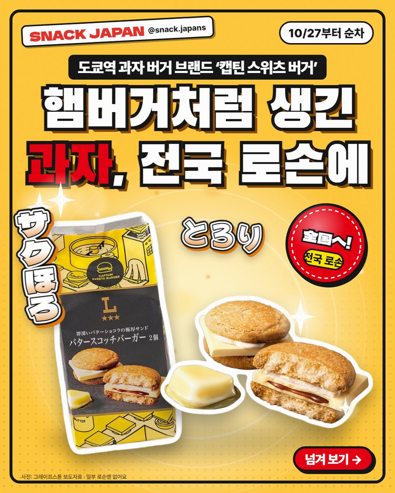
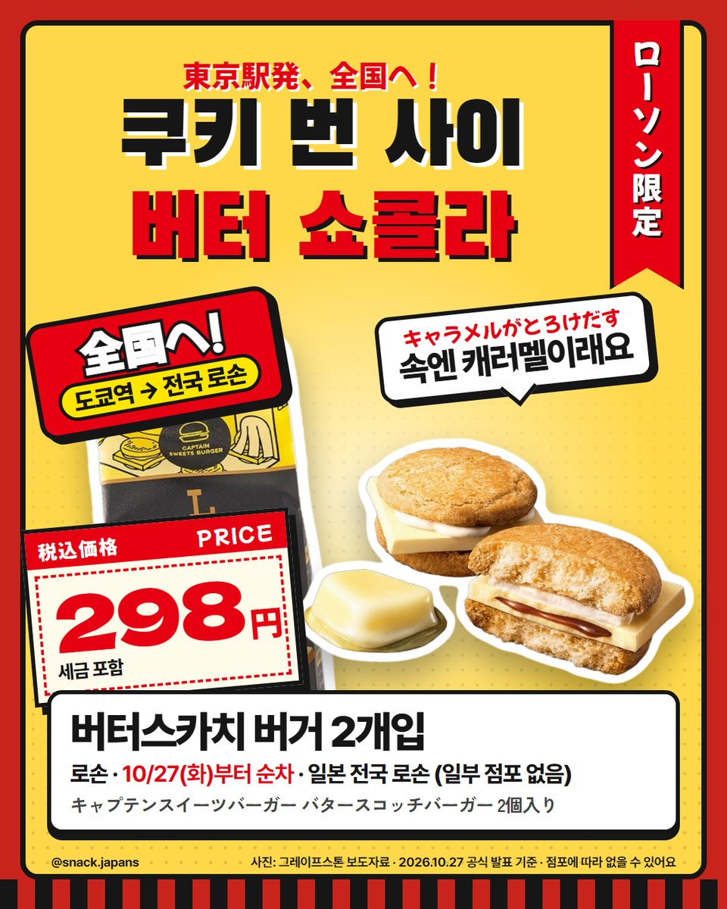
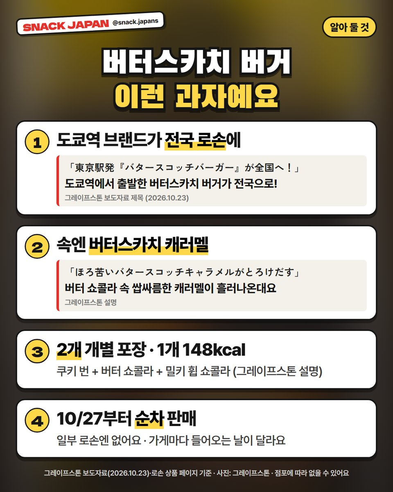
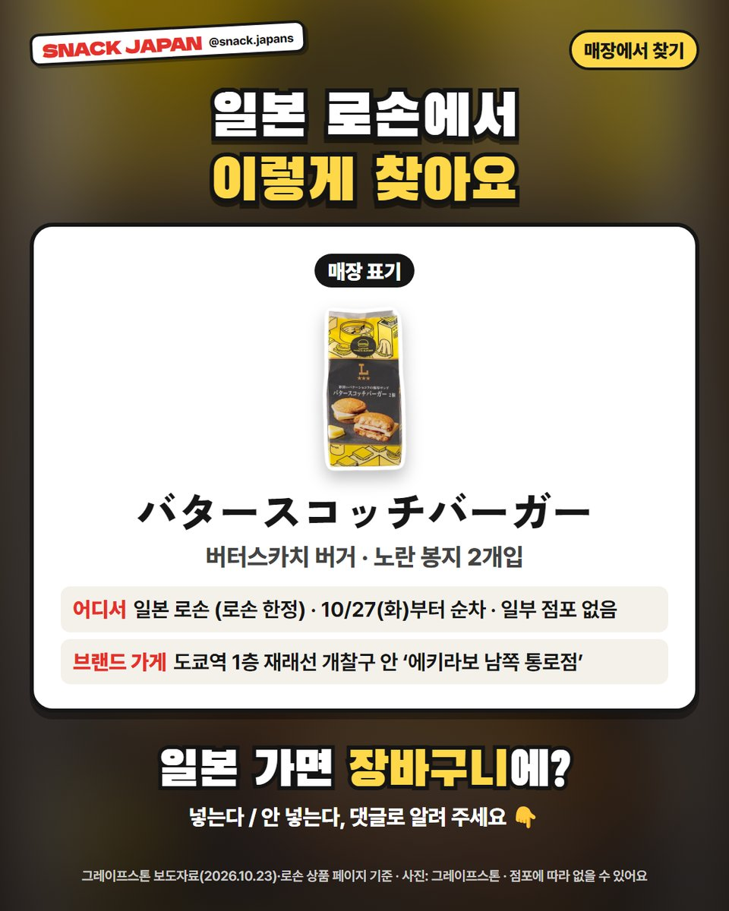

일본 로손 버터스카치 버거 출시, 도쿄역 햄버거 모양 과자가 전국 로손으로
10/27부터 순차 출시! 도쿄역 과자 버거 브랜드 '캡틴 스위츠 버거'의 버터스카치 버거를 일본 로손에서 만나요.
햄버거처럼 생긴 과자, 본 적 있어요? 🍔
도쿄역에서 시작한 과자 버거 브랜드 '캡틴 스위츠 버거'의
'버터스카치 버거'가 이제 일본 로손에 나왔어요.
그레이프스톤 보도자료와 로손 상품 페이지 기준으로 정리해 볼게요!

1. 언제·어디서?
- 파는 곳: 일본 로손 (로손 한정, 일부 점포 없음)
- 출시: 10/27(화)부터 순차
- 일본 이름: バタースコッチバーガー 2個入り
- 가격: 사진 카드에 정리해 뒀어요

2. 쿠키 번 + 버터 쇼콜라 + 캐러멜
그레이프스톤 설명으로는
일본산 버터 향의 쿠키 번 사이에
버터 쇼콜라를 두툼하게 끼우고,
밀키한 휩 쇼콜라를 겹쳤대요.
- 버터 쇼콜라 속에 쌉싸름한 버터스카치 캐러멜이 들어 있대요
- 개별 포장 2개, 1개 148kcal (로손 표기)

3. 도쿄역 브랜드가 전국 로손으로
보도자료 제목이 「東京駅発『バタースコッチバーガー』が全国へ！」 —
'도쿄역에서 출발해 전국으로!'라는 뜻이에요.
브랜드 상설 가게는 JR 도쿄역 1층 재래선 개찰구 안 '에키라보 남쪽 통로점'에 있어요.
이번 2개입은 로손 한정 상품이에요.

4. 매장에서 찾는 법
- 매장 표기: バタースコッチバーガー
- 노란 봉지에 2개 들어 있어요
- 점포마다 들어오는 날이 다를 수 있어요
총평
- 기준: 그레이프스톤 보도자료(10/23)·로손 상품 페이지, 10월 27일 확인
- 참고: 직접 먹어 보지 않아서 회사 설명만 옮겼어요
- 추천: 일본 로손 신상 구경하는 분, 모양이 재밌는 과자 좋아하는 분
일본 가면 장바구니에 넣을래요?
댓글로 알려 주세요 🍔
사진: 그레이프스톤